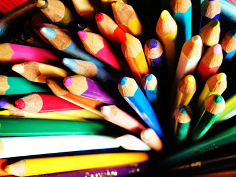

jQuery UI Accordion
What about Pencils
Pencils 1
What is a pencil? Off the top of my head its an object that one can hold in the hand and is used to transfer information. Generally with some form of non metal that is encased in wood. There are some pencils that are encased in plastic. This is the fancy version. The substance that make a pencil transfer the information is Graphite. It may have been Lead years ago. Its a basic tool.
Different types of Pencils...
Pencils 2
Here is a short list of pencils.
- Mechanical Pencils...
- Carpenter Pencils...
- Twiddler Pencils...
- Standard Graphite...
Where to find more information about Pencils?
Pencils 3
There are about 9 different types of pencils. Pencils can also come in color. Items like Graphite, Carbon, and yes Wax have been used in pencils to fulfill certain needs. Pencils have grade levels which has to do with the softness or hardness. The scale is based on a B and H scale. Check the link for even more information on pencils. Interwell Statiionary